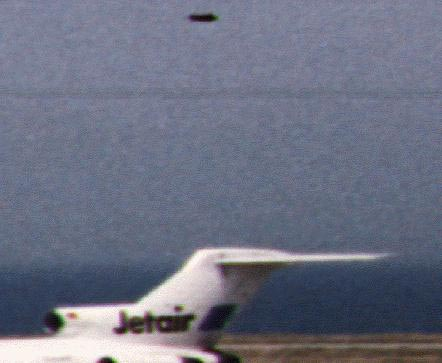
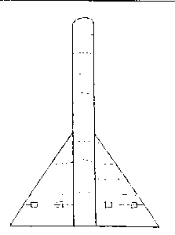

Observation à l'aéroport de Crête (Grèce), lors du passage d'un avion irakien "Gallery #1 1996 Volume
7", Ufo Sweden
En Crête (Grèce), observation lors du passage d'un avion irakien .
Paul Frederick Bennewitz est dans un hôpital psychiatrique.
Démonstration SRI des "voyants
psychiques" (projet
Aquarius).
A Val-de-Reuil (Haute Normandie), 1 témoin observe
environ 10 points de couleurs différentes, bleus, jaunes ou blancs sont au-dessus de la ville à plusieurs
endroits, qui disparaîtront petit à petit derrière des nuages
GEPAN: Cas
de type C.
Le Japon lance sa 1ʳᵉ sonde, Sakigake, en direction de la comète de Halley.
A Mormoiron (Vaucluse), 3 témoins vont observer à des dates différentes un
phénomène lumineux particulier. A chaque fois il s'agit d'une sphère d'environ 3 m de diamètre dont la couleur
passe progressivement du blanc vers l'orangé. Cette sphère qui devient aveuglante se déplace lentement et sans
bruit : elle semble tourner sur elle-même dans tous les sens. Elle semblera suivre le véhicule de 2 des témoins
avant de disparaître
GEPAN: PAN
classé D.
Dans le secteur de Cosne d'Allier (Allier),
un automobiliste et sa femme vont être t&eacutê d'un phénomène lumineux jaune et de forme triangulaire qui
semble même les suivre un moment pour disparaître brusquement
GEPAN: PAN
classé C.
A Cosne d'Allier (Allier), des témoins
voient des flashes de lumière dans une maison en ruine à coté de chez eux. L'enquête démontrera très vite
qu'il s'agit d'un court circuit sur une clôture électrique
GEPAN: PAN
classé C.
A Chatillon-sur-Seine (Côte d'Or), un automobiliste et sa femme voient un point
blanc avec des reflets bleu-vert. Ce point beaucoup plus gros qu'une étoile a une trajectoire rectiligne et
ne laisse derrière lui aucune trace ou traînée. Cette observation a duré environ 5 s avant que l'objet ne
disparaisse
GEPAN: PAN
classé C.
A Saint Germain (Lot), 2 témoins sont surpris par 2 éclairs
successifs suivis de cliquetis et d'une clarté subite, intense et courte. Au-dessus de leur maison ils
voient 1 objet de la forme et de la grosseur d'un ballon de rugby de couleur laiteuse qui se déplaçe
lentement et silencieusement entouré d'un halo blanchâtre. 3 mn plus tard environ ces témoins et d'autres
personnes entendront des déflagrations. Aucune coupures de courant électrique ne seront constatées dans la
maison
SEPRA: PAN
classé D.
A Moiran-en-Montagne, Jura, 5 témoins voient depuis des lieux
différents 1 boule de feu de couleur rouge. Ce phénomène très lumineux se déplace en provoquant une épaisse
fumée L'enquête de gendarmerie a montré qu'il s'agit probablement d'une fusée de détresse de marin tirée pour essai par un habitantGEPAN: PAN
classé B.
A Gandrieu, Lozère, plusieurs témoins voient 1 objet en
forme d'ogive, de contour irrégulier et rouge vermillon tombant à pic derrière une montagne. Craignant qu'il ne
s'agisse d'un aéronef en difficulté, la gendarmerie est immédiatement informée de cette observation et peut
constater également le phénomène L'enquète démontrera qu'il s'agit d'une fusée de détresse marine périmée lancée sans intension particulière par un habitant d'un hameau voisinGEPAN: PAN
classé A.
Le sénateur américain Garn est le 1er astronaute non professionnel de
l'histoire.
A Saint Cloud, Minnesota, une étoile de mer (d'habitude
originaire de Floride) tombe du ciel.
Challenger effectue son 7ème vol.
A la Trinité Porhouet (Morbihan), plusieurs témoins
en voiture voient dans le ciel de nombreux flashes de différents couleurs. Ces lumières s'allument
alternativement et à différents endroits. 2 points blancs ceintrés de rouge attirent leur attention plus
particulièrement : ils se déplaçent avec des accélérations importantes et semblent se rapprocher et disparaître
derrière un rideau d'arbres de leur propriété. Les témoins distinguent alors entre 2 arbres une forme
rectangulaire d'un rouge vif qui semble être posée sur la colline d'en face. Effrayés ils rentrent alors chez
eux et quelques instants plus tard entendent un vrombrissement sourd. Lorsqu'ils ressortiront l'objet aura
disparu Exceptés les flashes qui pourraient être des manifestations d'orages locaux, aucune explication n'a pu être apportéePAN classé
D.
A Gan (Pyrénées-Atlantique), 1 témoin sur le pas
de sa porte aperçoit durant 10 s 1 point lumineux blanc se déplaçant dans le ciel à très vive allure, sans
bruit et en zig-zag
GEPAN: PAN
classé C.
Au-dessus de la province de Gansu (Chine), le capitaine d'un Boeing 747 se rendant
de Pékin à Paris voit un ovni traverser sa trajectoire, le poussant à envisager un atterrissage en
catastrophe. On estime la largeur de l'objet à 10 km.
A Mouy (Oise), 1 témoin va observe durant 5 mn un objet
de forme circulaire d'un diamètre de 1,50 m et d'une hauteur d'environ 1,80 m. Cet objet semble composé
d'après le témoin d'une matière instable de type gazeux. Il est statique à 5 m du sol et ne fait aucun
bruit. Un rayonnment incandescent émane de cet objet qui va se dématérialiser subitement Le témoin avait déjà fait une observation similaire en 1976GEPAN: PAN
classé C.
La sonde européenne Giotto, lancée par Ariane 1, débute son
voyage vers la comète de Halley.
A Saint André-les-Vergers (Aube), 1 témoin voient
avec d'autres personnes un phénomène lumineux particulier au-dessus d'un groupe d'arbres. Dans un ciel clair
et étoilé, une forme ressemblant à une assiette retournée et surmontée d'un dôme émet une lumière de couleur
blanche et jaune. Cet objet stationnaire disparaîtra progressivement une 1èe fois pour réapparaître encore.
Aucun bruit n'est entendu lors de l'observation qui va durer 40 mn Le témoin avertira d'abord une station radio le lendemain qui fera le relais auprès de la presse locale. L'enquête des gendarmes n'a permis de confirmer les dires de la fille sur plusieurs points : l'un des témoins cités n'était pas présent, l'autre n'a pas confirmé. D'autre part la situation météorologique du moment ne correspond pas à celle décrite par le témoin. Il semble bien que ce témoignage ne soit pas très crédible et relève de l'affabulation d'une adolescenteGEPAN: PAN
classé B.
Les habitants de 6 villes des alentours disent voir vu un ovni au-dessus
de Boulawayo (Matabéléland, Zimbabwe). 2 avions d'interception Hawk,
de la ZAF décollent de la base aérienne de Thornhill pour aller
voir ce qui se passe. L'aéroport de Boulawayo capte sur son radar l'ovni qui est observé par des
spectateurs au sol. De forme arrondie, surmonté d'un petit cône, il brille si vivement dans la lumière
de l'après-midi que les autres détails sont indistincts. Les avions Hawk de la
ZAF approchent de l'ovni tandis qu'il stationne à une altitude de
2000 m, mais il remonte alors à 21 000 m en moins de 1 mn. Les Hawks le poursuivent jusqu'à
9500 m puis abandonnent la chasse alors que l'ovni vole en palier. Puis, ce dernier suit les jets
jusqu'à leur retour à Thornhill avant de finalement repartir à toute allure.
A Ploermel (Morbihan), observant depuis
chez lui une lueur particulière, 1 témoin décide de se rendre sur le lieu présumé de la lueur. Sur place
ne voyant rien et après avoir discuté avec 1 autre personne, ces témoins sont tout à coup surpris de
voir à environ 200 m d'eux, une grosse forme ovale de 20 m de long et 5 m de haut émettant une lueur
assez pâle. Une lumière dicontinue semble suivre le pourtour de cette forme. Une autre source lumineuse
plus brillante changeant d'intensité se trouve à coté de la plus grande forme.Les témoins vont alors
voir disparaître puis réapparaitre ce phénomène sans entendre de bruit. Plus tard et à un autre endroit,
d'autres personnes ainsi que le témoin pricipal verront un phénomène lumineux ayant la forme d'un
cylindre à l'intensité lumineuse variable et dont l'arrière semble balayer le ciel comme des
projecteurs. Disparition soudaine et définitive Les informations le Pays, 1985-08-23Ouest-France, 23 août 1985Sud-Ouest, 1985-08-24La Bretagne à Paris, 30 août 1985Enquête de Ch. JayLDLN n°295 pp. 24-27Bulletin du GESAG n° 82 - 12/1985 pp. 7-9Alain GamardGEPAN: PAN
classé D.
A Digne (Hautes Alpes), 1 témoin observe dans le
ciel 1 point fixe, lumineux, légèrement rougeâtre comme une étoile. Ce point se déplace alors verticalement
au-dessus du village en changeant de couleur et d'intensité lumineuse pour prendre la forme "delta" et se
déplacer horizontalement de plus en plus vite. Le témoin remarque que quelques secondes aprés son
déplacement à la verticale, un bruit sourd se fait entendre et qu'en s'éloignant l'objet redevient un point
lumineux
GEPAN: PAN
classé C.
A Saint Pierre (Réunion), observation semblable à celle
du 13 septembre
GEPAN: PAN
classé C.
 Le 'missile
argenté' observé par les pilotes suédois, estimé à 6 m de long
Près de Sûderhamn (Suède), 4 pilotes civils rentrent d'un
show aérien en descendant la côte Est du pays : Nous volions à environ 1000 m entre UmeÔ et GÉvle
lorsque l'un d'entre nous repéra soudain quelque chose scintillant au soleil au§dessus des bois devant
nous rapportera Per Lundqvist, qui pilotait le Cessna. En nous rapprochant nous avons vu qu'il
s'agissait d'un missile metallique avec des ailerons à l'arrière. De temps à autre il changeait de
trajectoire en suivant le terrain et je me suis dit que c'était comme s'il suivait les lignes électriques
en-dessous de nous. Comme cela nous intriguait j'ai plongé vers le missile et ai fait virer notre avion pour
essayer de le suivre, mais c'était impossible. Nous n'avions tout simplement pas la puissance moteur pour
rivaliser avec l'objet. Nous l'avons perdu de vue à une altitude quelques centaines de m.. Ils
signaleront leur observation aux militaires qui tentèrent, en vain et pendant 6 mois, d'identifier l'objet.
Cependant, personne des autorités de défense ne prendra de contact direct avec les pilotes après leur 1er
signalement Dagens
Nyheter, 1991-05-24. UFO-Aktuellt, 1991, issue 2, p. 9.. Ce manque d'intérêt pour pour la
violation de l'espace aérien suédois par des objets aériens inconnus (en comparaison avec le vif intérêt
militaire dans la récente vague de violations soumarines suédoises) est typique, bien qu'étrange
"Missile That Followed the Power-lines" in "Close
Encounters With Unknown Missiles", UFO Sweden.
Kary Mullis (prix Nobel de chimie 1993) arrive après 3 h de route à
sa cabane. Il sort des fournitures d'épicerie qu'il a acheté sur le chemin, allume les lumières (alimenté par
des piles solaires) et se dirige, une lampe de poche en main, vers les toilettes situées à environ 50 pieds
dehors à l'ouest de la cabane. Au bout du chemin, sous un sapin, il y avait quelque chose de brillant. Je
pointais ma lampe torche dessus. Le faisceau ne fait que le rendre plus blanc. Ca semblait être un raton
laveur. Je n'avais pas peur. Par la suite, je me suis demandé si ça avait pu être un hologramme projeté
d'on-ne-sait-où. Le raton laveur parla. "Bonsoir, docteur," dit-il. J'ai répondu quelque chose, je ne me
souviens pas quoi, probablement "Bonsoir". La choise suivante dont je me souviens, c'était de me trouver tôt
le matin, à marcher le long d'une route qui monte de ma maison. Mullis n'avais aucune idée de comment
il est arrivé là, mais il n'était pas mouillé par la considérable rosée du matin. Sa lampe de poche n'était plus
là. Il n'a jamais pu la retrouver. Il n'avait pas de marques de blessures ou de contusions. Les lumières de la
cabane étaient toujours allumées, et les fournitures d'épicerie toujours sur le sol. Environ 6 h s'étaient
écoulées sans explication. Plus tard dans la journée, il constata qu'une zone de sa propriété, la plus
belle partie de mon bois, était inexplicablement devenu un lieu effrayant Mullis, Kary: Dancing
Naked in the Mine
Field, 1998 < Chalker, Bill: "An interesting
aside", supplément de "Strange Evidence", printemps 1999, IUR (CUFOS).
Fin de la vague d'observation ayant début en 1981-12 à Hessdalen (Scandinavie).
A Groom Lake, fin du programme d'avion furtif Tacit
BlueCommuniqué de presse de l'USAF du 1996-01-04.
A Lyon (Rhône), plusieurs témoins voient 1 boule de
la grosseur d'une balle de football tomber silencieusement et verticalement dans les eaux du port Edouart
Herriot à Lyon. Cette boule lumineuse verte est entourée d'un halo fluorescent également vert; au même moment,
les différents éclairages de la voiture êeillance de la patrouille vont clignoter quelques instants. Puis
pendant environ 1 lueur jaune-blanchâtre d'un diamètre d'environ 30 m sera vue dans le fonds de
l'eau par les personnes présentes sur les lieux. Cette chute a également été aperçue par d'autres témoins situés
en dehors de la ville. Une radioactivité peu importante a été détectée lors des premiers sondages de surface
GEPAN: PAN
classé D.
A Dole (Jura), 1 témoin aperçoit 1 phénomène lumineux
fixe en forme de boumerang couleur jaune aux jumelles durant presque avant qu'il ne disparaisse
GEPAN: PAN
classé C.
A Saint Pierre (Réunion), plusieurs témoins dont des
gendarmes voient pendant quelques mn 1 masse blanche brillante qui effectue des déplacements sans aucun bruit le
long du chemin balisé menant au volcan. Cet objet de la forme d'un boomerang a des mouvements oscillatoires : il
prend soudain de l'altitude et une forme sphérique avant de disparaître sans laisser aucune trace.
Après un article paru dans la presse à ce sujet, une personne viendra témoigner de la même observation faite le 6 août à quelques km de là . Aucune information complémentaire n'est venue confirmer une des hypothèses de la gendarmerie localeGEPAN: PAN
classé C.
A Vienne (Isère), 1 témoin observe durant 1 h 1 objet
en forme de coupole avec des lumières à l'intérieur. Bien plus tard dans la soirée et avec des jumelles, l'objet
semble être suivi d'une incandescence. L'observation sera également faite aux jumelles par les gendarmes et le
directeur d'un observatoire : malheureusement la brume empêchera toute observation au télescope
GEPAN: PAN
classé C.
A Marseille (Bouches-du-Rhône), plusieurs
témoins voient dans le ciel 1 point fixe brillant avec de légères colorations rouges, bleues, jaunes ou vertes.
Ces observations sur plusieurs jours et d'une durée de parfois ont été confirmées par le personnel de
l'observatoire des Alpes de Haute-Provence Il s'agit probablement de l'observation d'une planète ou d'une étoileGEPAN: PAN
classé B.
A Barjac (Ardèche), 2 témoins apercoivent dans le
ciel 1 objet brillant de forme circulaire et fixe qui ressemble à une étoile. Durant cette observation assez
longue, 1 des témoins, muni de jumelles, voit l'objet s'aplanir pour prendre une forme de cigare. D'une des
extrémités, 1 point lumineux semble se détacher et se déplace à faible vitesse laissant derrière lui des
turbulences brillantes. 2 à 3 mn plus tard, le phénomène reprend sa forme initiale. les
nuages vont définitivement masquer le phénomène
GEPAN: PAN
classé C.
A Cahors (Lot), un automobiliste et ses passagers
voient un phénomène lumineux de dimension importante. Lors du déplacement de ce phénomène il vont voir une forme
triangulaire avec des feux clignotants verts et rouges. Aucun bruit n'est entendu et la vitesse estimée est de
80 à 100 km/h. Lors de l'enquête, il sera établi que des vols d'instruction de chacun et sur
le même secteur ont eu lieu avec un appareil Cessna type 150. Le pilote qui a plusieurs fois éclairé la cabine
de pilotage et allumé le phare d'atterrissage pour ses élèves n'a rien observé d'insolite lors de ces vols. Il
est probable que les témoins aient vu l'avion en question lors d'un des passages sur le secteur
GEPAN: PAN
classé B.
A Dannemarie (Haut Rhin), des témoins aperçoivent des
phénomènes lumineux particuliers. Malgré le temps orageux et les éclairs présents en ce début de soirée, 1 des
témoin aperçoit 4 fois de suite 2 faisceaux de lumière aveuglante : la source lumineuse semble être située à 1
km de chez lui, au-dessus d'un groupe d'arbres et placés sur un plan rectiligne. 2 autres témoins vont voir des
lumières rouges, bleues et blanches apparaître 3 fois de suite
PAN classé
C.
Lancement du satellite Nimbus 7, qui détecte le "trou" de la couche d'ozone.
A Fresnes (Val-de-Marne), 1 témoin aperçoit depuis son
appartement au 4eme étage un ballet circulaire de 5 disques blancs. Ce ballet semble avoir lieu à 2 km environ
et sur un périmètre de 500 m. Les disques vont former un carré autour d'un disque central. Puis les 4 disques
vont rejoindre le disque central qui va grossir et devenir plus brillant. Le balai initial va soudainement
reprendre et disparaître brusquement. Aucun bruit ne sera entendu Bien que cette hypothèse n'ai pas été approfondie par les gendarmes, la description du témoin nous amène à privilégier l'hypothèse d'un ballet de faisceaux laser de type sky
roseGEPAN: PAN
classé B .
A Villers Bocage (Somme), plusieurs témoins
entendent un bruit sourd important. Sortant de chez eux ils voient un ensemble de lumières sur un engin volant :
des lumières rouges à l'avant et à l'arrière de l'objet ainsi que des lumières brillantes au milieu. Le passage
de cet objet au-dessus du lotissement se fait lentement et les lumières et l'engin disparaissent progressivement
L'enquête évoque la possibilité du passage d'un avion type "Transal" effectuant ce soir là et à cette heure un vol dont l'itinéraire le faisait passer au-dessus de la communeGEPAN: PAN
classé B.